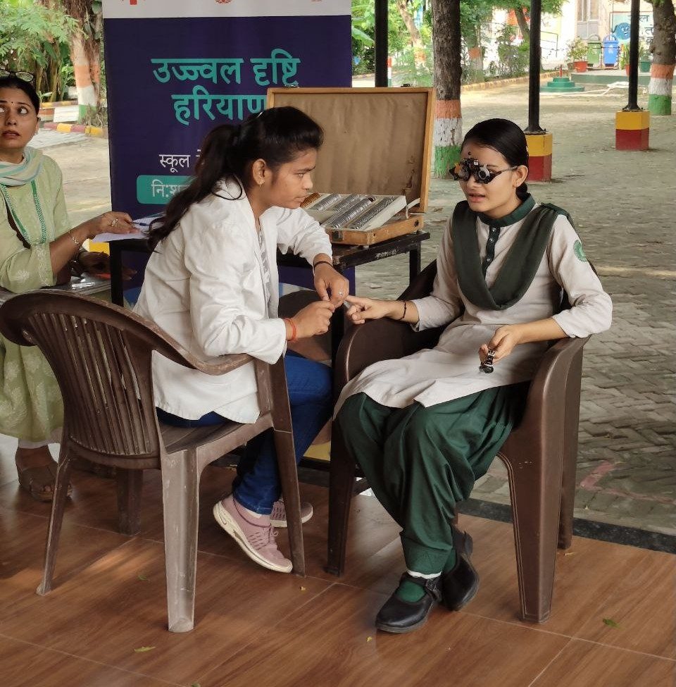
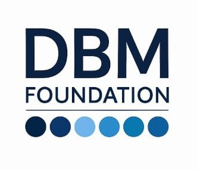
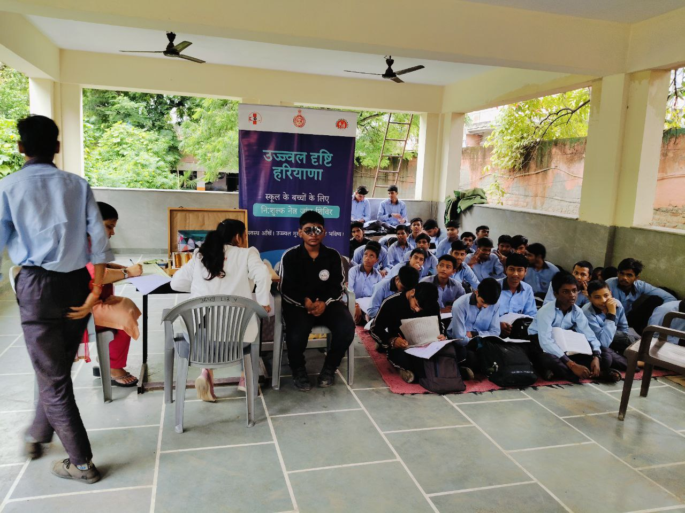

About Doctors Beyond Medicine
(DBM) Foundation
Social problems are complex. Just as a doctor prescribes medicines to heal a patient, the Doctors Beyond Medicine Foundation, a registered section 8 non-profit company, brings together development practitioners who collaborate with corporates, communities, and governments—enhancing knowledge, skills, and action to address challenges faced by children, girls, tribal communities, the poor, and disadvantaged groups.
The Foundation recognises that many social challenges cannot be addressed through a single-sector approach. Health, education, and livelihood opportunities are closely interconnected and together influence the quality of life of individuals and communities.
We work to address these challenges by promoting collaborative action in building skills, preventive health care, and sustainable livelihood opportunities. By making the workforce future-ready and promoting environmental practices, we deliver not just solutions, but pathways to lasting well-being.

The Vision
To build resilient, future ready communities where health, education, livelihoods, and sustainability converge guided by knowledge, strengthened by skills, and enriched by heritage
The Mission
Empower communities to learn, to heal, to honour heritage, and to grow sustainably so that every skill, every tradition, and every harvest strengthens society
Objectives
The Foundation strives to build resilient, future-ready societies by promoting preventive health practices, enhancing learning and employability, and enabling inclusive economic opportunities—ensuring that individuals and communities can lead healthy, dignified, and sustainable lives.
Our Focus Areas
The Foundation designs and delivers initiatives that foster skills, advance public health, honour indigenous knowledge, and promote sustainable agriculture—building resilient, future-ready communities where education, livelihoods, and health converge..
1. Public Health Programme
We promote preventive health awareness, screenings, education, and early intervention empowering communities with reliable information and practices that support long-term well being
2. Skill Development
We build future-ready communities by strengthening skills, honouring indigenous knowledge, and transforming field practices. The Foundation strengthens learning approaches that promote school to work transitions and nurture future ready skills, enabling individuals to engage effectively with their communities and contribute to collective well being.
3. Livelihood & Sustainable Agriculture
3. Livelihood & Sustainable AgricultureAccess to sustainable livelihood opportunities is critical for strengthening economic security and social resilience.The Foundation works to strengthen livelihood opportunities by supporting sustainable agriculture practices, entrepreneurship, and community based economic initiatives, .
Our Implementation Model
Doctors Beyond Medicine Foundation adopts a structured implementation approach that connects engagement, institutional strengthening, and knowledge systems to ensure that programmes lead to practical and sustainable outcomes.The Foundation works through three complementary levels of engagement
Community Level Engagement
At the community level, the Foundation focuses on strengthening awareness, skills, and local participation.
Read MoreInstitutional Partnerships
Recognising that sustainable change requires strong institutions,the Foundation works closely with government
Read MoreKnowledge and Communication Systems
A key component of the Foundation’s work is strengthening knowledge dissemination and development communication
Read MoreApproach to Sustainability
Across all programmes, the Foundation prioritises approaches that build local capacity, institutional ownership
Read MoreVillages Adopted
Children Educated
Healthcare Camps
Corporate Partners
Join us in making a difference today
Your contribution can change a life. Volunteer your time or donate to support our cause.